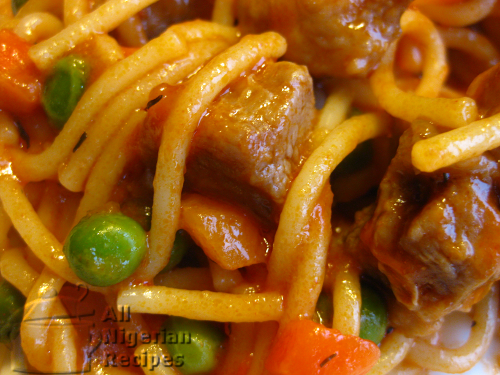

Spaghetti Surprise

Description
Raise your hand if you think that cooking spaghetti and eating it with the good old beef/chicken stew is oh-so-boring. I think so too. That's why I bring to you the Spaghetti Surprise recipe.
Ingredients
- Spaghetti: The quantity you can wrap between your thumb and index finger.
- 5-6 normal cuts of beef
- 500g vegetables:
- Cabbage
- Green Pepper
- Carrots
- Green peas
- Green beans
- 600 mls (20 fl. oz.) Tomato Stew
- Pepper and salt (to taste)
- 1 medium onion
- 2-3 stock cubes cubes
- 1 teaspoon thyme
Steps
- Make some Tomato Stew if you do not have any.
- Break the spaghetti into short pieces. I usually break one strand of spaghetti into three pieces.
- Cut the beef into small pieces. It is best to buy the part of beef that has streaks of fat in it.
- Wash and cut the cabbage, green pepper and green beans into small pieces. Also wash, scrape and cut the carrots into tiny pieces. Cut the onions into small pieces and remove the green peas from the pods. If you will use tinned green peas, simply drain the preservation water and rinse with some fresh water.
- Cook the beef with the onions, thyme and stock cubes (Maggi or Knorr).
- While the meat is cooking, start cooking the spaghetti in a generous amount of water.
- When the beef is done, add the Tomato Stew. Add the vegetables, salt and pepper to taste and cook for about 5 minutes.
- When the spaghetti is done to your personal preference, drain the water and pour the mixture of beef stock and tomato stew you prepared earlier into the pot of spaghetti. Stir well, cover and leave to stand for about 5 minutes.
- The Spaghetti Surprise is ready to be served.
The Spaghetti Surprise is perfect when eaten alone but feel free to serve it with Fried Plantain.